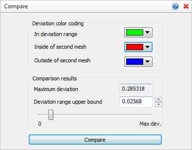
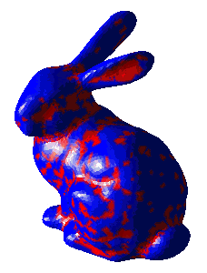

You can use this command to Compare two meshes. This can be helpful when you plan to make repairs and refinements to the original mesh. After selecting the two meshes the Compare command dialog allows you to graphically display the minimum and maximum deviation of the two. This allows you to locate ares of your mesh that may need additional refinement.
 Make a Copy of your original Mesh: This command requires two mesh objects to compare. Before modifying your original mesh using any of the Inspect & Modify tools, you can make a copy of it using the VisualCAD Copy command. Then the original mesh can be used to Compare to your current mesh you have modified. Make a Copy of your original Mesh: This command requires two mesh objects to compare. Before modifying your original mesh using any of the Inspect & Modify tools, you can make a copy of it using the VisualCAD Copy command. Then the original mesh can be used to Compare to your current mesh you have modified.
|
1.First select the two meshes to compare. 2.Use the command dialog to view the min/max deviation range graphically. 3.Make mesh decisions based on results. |
|
Screen Pick
|
Optional Information
|
Step 1
|
Select Compare from the Inspect & Modify.
|
Steps 1 & 2 can be performed in reverse order. You can select a mesh first and then select the command icon.
|
Step 2
|
Select the main mesh you want to compare.You can pick from the graphics window or from the Browser.
|
Step 3
|
Select the mesh to compare with.
|
-
|
Step 4
|
Pick the Compare button to display comparison results.
|
See below.
|
Step 5
|
Use the slider to display the minimum and maximum deviation of the two meshes graphically.
|
See below.
|
|
|
These options appear on the Browser for this command.
 Compare Command Options
Here you can set the colors used for displaying deviation results. The colors update the display in real time as the min/max deviation slider is moved between 0 and Max dev. refer to the Comparison results section below.
•In deviation range
This color is used to display those portions of the two meshes that are within the deviation range defined by the min/max slider. •Inside of second mesh
This color is used to display portions of the first mesh which are inside of second mesh and deviate on more than “deviation range upper bound” from it. •Outside of second mesh
This color is used to display portions of the first mesh which are outside of second mesh and deviate on more than “deviation range upper bound” from it. |
This portion of the dialog displays the maximum deviation value between the two meshes. The slider can be used to display only those portions that fall within a specified range.
•Maximum deviation
This is the calculated deviation of the two meshes. It cannot be altered. •Deviation range upper bound
This value determines the sufficient deviation distance between two meshes. Portions of the first mesh which deviate between 0.0 and “Deviation range upper bound” from the second mesh will be displayed with the color specified in the “In deviation range” property.
You can enter a value or move the slider to display the results dynamically on the graphics screen. The image below shows the animated results of the Deviation range upper bound being moved from 0 to Max dev. The first mesh is the original mesh object. The second mesh is the results of Repair and Modify commands.

Animated results of the Deviation range upper bound being moved from 0 to Max dev.
|
|
•Compare
Select this button to Compare the two meshes and display the results. |